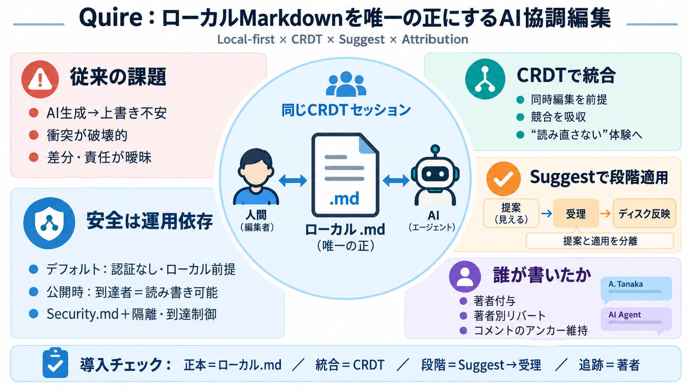

Yjs: A CRDT framework for shared editing Enable shared editing in every application
Yjs is a data synchronization framework that is specifically designed for creating shared editing applications like Goog…

Local-first×CRDT×AI協調
QuireはローカルのMarkdownをソース・オブ・トゥルースにし、人とAIが同じCRDTセッションで“責任境界つき”に編集できるようにする設計です。
“上書き不安”が残る
従来の「AIが内容を生成してファイルを上書き」方式だと、衝突・差分の追跡・責任境界が曖昧になりやすいです。
正本は1つ
Quireではインポート/エクスポートではなく、ローカルフォルダ内の.mdを“唯一の正（source of truth）”として扱い、編集結果も同じファイルへ落とし込みます。
CRDTセッション共有
AIエージェントを“生成器”ではなく、CRDTセッションのピアとして参加させます。カーソル可視化と著者付与で、編集範囲の責任を持たせます。
提案と適用を分離
Suggestモードでは提案は表示されますが、受理されるまでディスクへ反映しません。つまり「提案」と「適用」を分けて制御します。
レビュー可能性
著者単位のリバート（特定エージェント寄与のみ取り消し）や、コメントのアンカー維持によって、共同編集を“レビュー可能”に寄せます。
衝突しない体験
CRDTにより、複数参加者（ブラウザやエージェント）が同一ドキュメントを同時編集しても、破壊的上書きとして扱わず統合できることが狙いです。
安全は運用で決まる
Quireはデフォルトで認証なし、ローカルバインド（例：127.0.0.1）です。外部公開（例：--host 0.0.0.0）は“到達できる人が読み書き可能”というリスクが明示されています。
脅威モデルを読む
Security.mdで脅威モデルと前提が整理されています。運用はネットワーク隔離（LAN限定、ファイアウォール、リバースプロキシ等）が必要で、READMEだけで安全保証はできません。
MCPで同じCRDTへ
MCP（Model Context Protocol）を介して、Claude Code等のAIクライアントが同一CRDTセッションに参加します。Quire自体はローカルで動作し、アカウントやテレメトリ不要として切り分けられています。
強みと前提
Quireは、アトリビューション・Suggest・著者別リバートによって「編集の責任境界」をUI/データモデルに落とし込みます。一方で実運用の失敗モードや外部参照の副作用は、別途確認が必要です。
導入のチェック
Quireは「ローカルMarkdown＝正本」「CRDTで統合」「Suggestで段階適用」「著者で追跡」を軸にします。公開設定をするならSecurity.mdとネットワーク隔離を先に確認してください。
参照元（抜粋）
本デッキは、ユーザー提供のQuire README/要約・FAQ・所見（抜粋）に基づいて圧縮しています。
Yjs is a data synchronization framework that is specifically designed for creating shared editing applications like Goog…
CRDTs are widely used in distributed systems, including Riak, Redis CRDBs, Azure Cosmos, and collaborative tools like Yj…
| 7th | Logo for Booz Allen Hamilton Booz Allen Hamilton 1914, Mclean (United States), Public | Provider of analytics,…
Title: Quire - 2026 Company Profile, Team, Funding & Competitors - Tracxn # Quire - Company Profile. ## Quire - About th…
# Quire Information. Quire is the leader in Technical Report Management (TRM) for project driven companies in the Archit…